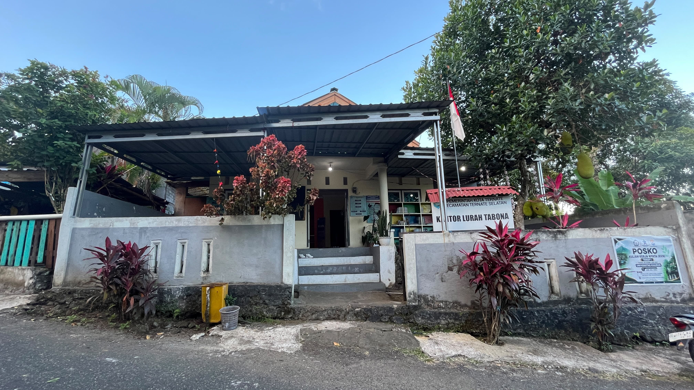
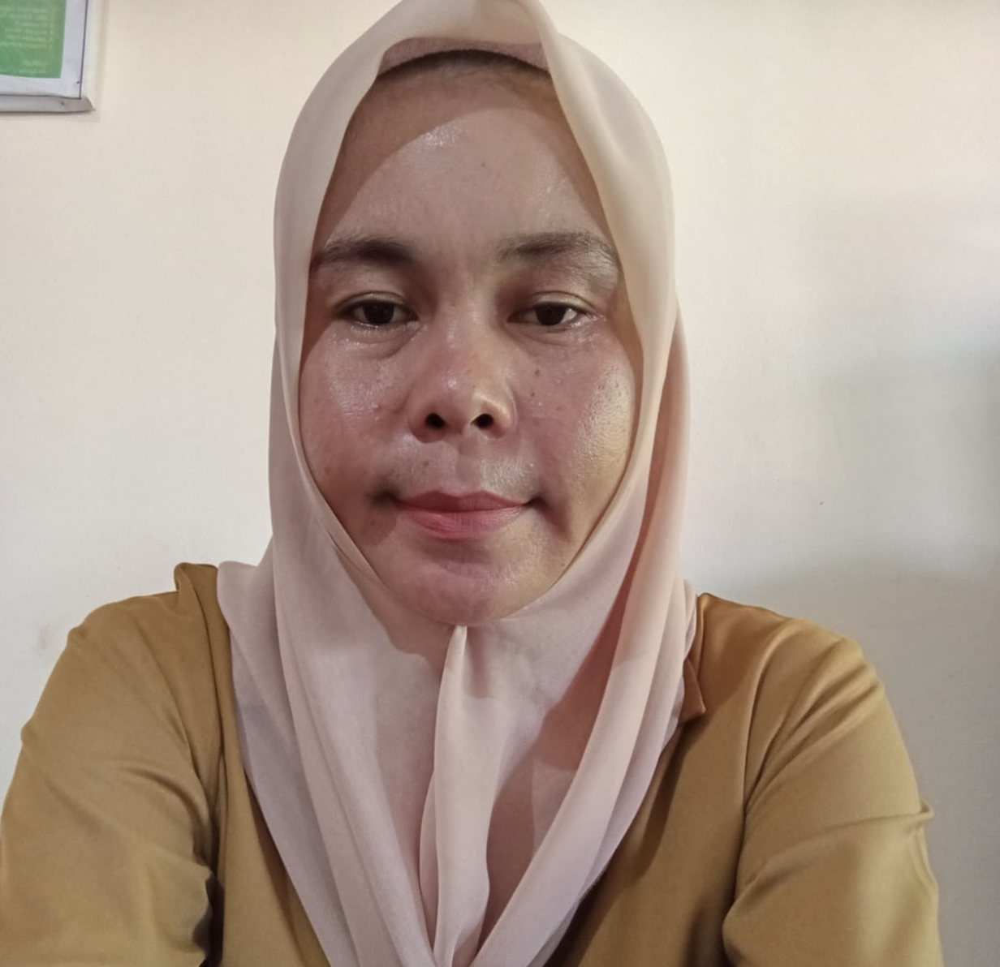
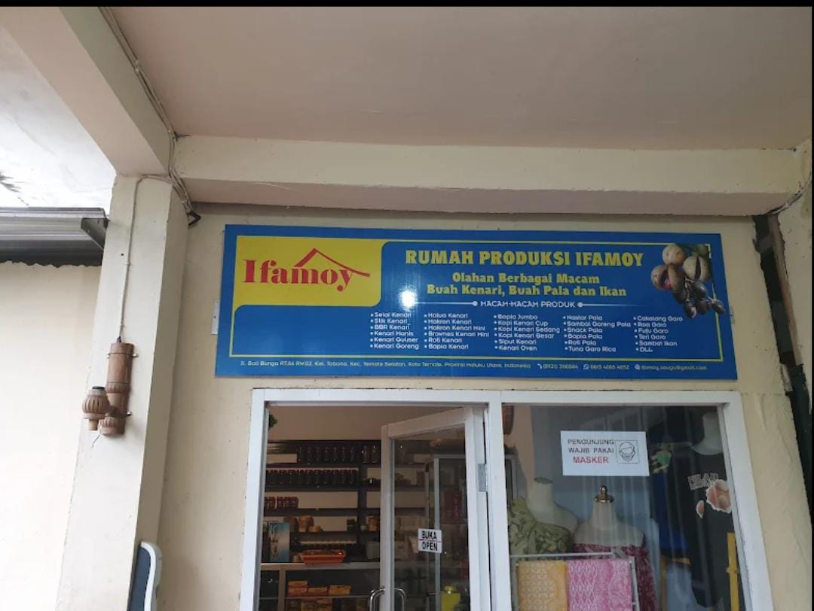

Pengumuman
Jadwal Posyandu
Jadwal posyandu pelaksanaan di lakukan bagi balita dan lansia di laksanakan pada 1 bulan sekali
Selengkapnya →Website ini menjadi pusat informasi bagi masyarakat mengenai profil kelurahan, potensi wilayah, berita terbaru, serta berbagai informasi pelayanan kepada masyarakat.
Mengenal lebih dekat Kelurahan Tabona melalui sejarah, visi misi, struktur pemerintahan, serta lokasi wilayah.

Kelurahan Tabona di kecamatan ternate selatan terbentuk dari
pemekaran kelurahan ubo-ubo pada tahun 2020. warga di lingkungan
jan, Tabona, sempat mengusulkan pemekaran lanjutan. namun rencana
tersebut tertunda akibat kebijakan moratorium penataan wilayah dari
pemerintah pusat
...
Tabona merupakan sebuah kelurahan yang terletak di kecamatan ternate selatan, kota
ternate, provinsi maluku utara. wilayah ini juga dikenal sebagai kawasan dataran tinggi populer
dengan spot wisatanya, seperti tabona puncak yang menyajikan pemandangan lanskap kota dari
ketinggian. untuk informasi dan layanan publik, anda dapat merujuk langsung ke situs resmi
kecamatan selatan.
Terwujudnya Kelurahan Tabona yang maju, mandiri, transparan, dan berdaya saing melalui pelayanan publik yang berkualitas.

Ema Haruna, S.I.P

Yunita Salim

Fahima A.ST. QUILO,S.HI

Masitta Barady,S.Sos

Abdul Gani Kharie, S.Pi
Jadwal posyandu pelaksanaan di lakukan bagi balita dan lansia di laksanakan pada 1 bulan sekali
Selengkapnya →
Kerja bakti sosial bersama warga kelurahan tabona dan mahasiswa kkn tahap 1 reguler tabona di lakukan pada saat 1 minggu sekali lebih tepat nya di hari jumat
Selengkapnya →
Mahasiswa kkn melaksanakan berbagai program di bidang Literasi cerdas Kreativitas & inovasi ekonomi hijau berdampak
Selengkapnya →Potensi unggulan dan produk UMKM Kelurahan Tabona.
Komoditas unggulan masyarakat.

olahan berbagai macam buah kenari,pala dan ikan

nikmati oleh-oleh khas ternate
Dokumentasi kegiatan pemerintah kelurahan dan mahasiswa KKN.
Jl. Keramat Kec. kota Ternate Selatan